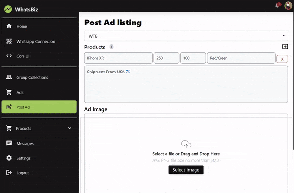

Latest projects
WhatsBiz
WhatsBiz, an Angular web app, seamlessly integrating WhatsApp functionality. It efficiently gathers and categorizes data from trading chat groups, empowering users to interact and transact through the web interface. The app facilitates deal initiation, direct client communication, and tailored ad campaigns across chosen groups, significantly enhancing WhatsApp group advertising management. Open-sourced on github.
Technologies used:
- NodeJS+Express
- Angular
- GPT-3.5
- Socket.io
- Baileys (WhatsApp Client)
- SQLite
